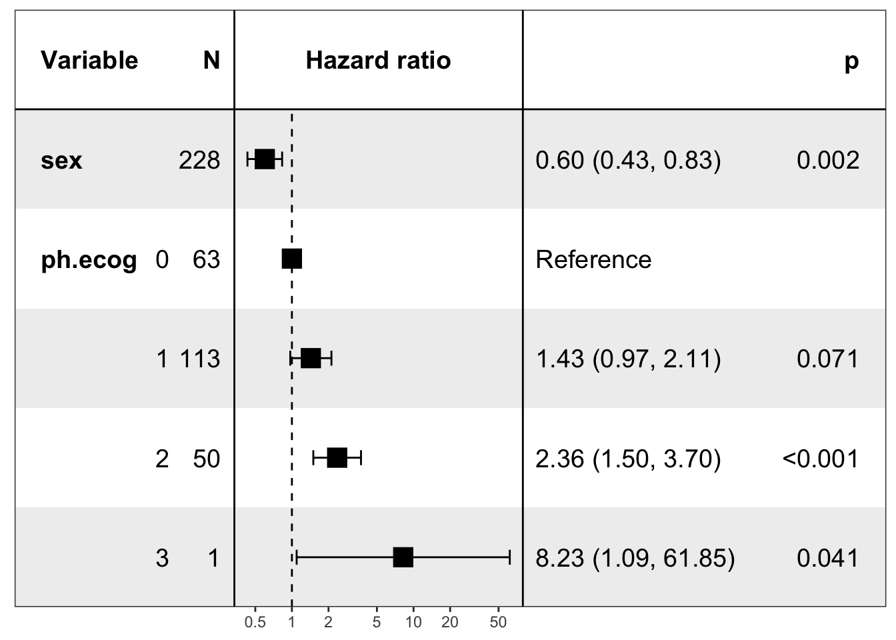
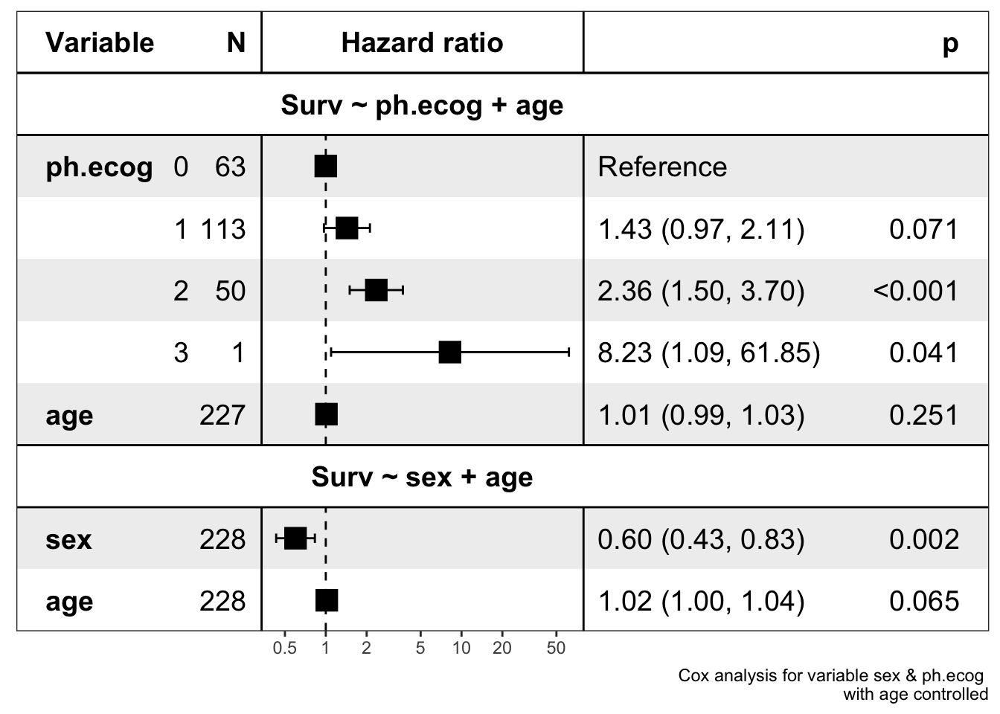

使用 ezcox 展示森林图
王诗翔 · 2020-01-13
我之前写过一篇文章介绍最近写的一个包 ezcox，它可以用来进行批量处理 Cox 模型（支持并行计算）。那个时候我已经关注到了 forestmodel 包并修复了几个 Bug，但作者没有将更新推到 CRAN 上，所以我就没将它加入到 ezcox 的早期版本中。最近我通过版本检查巧妙地规避了这个问题，因此写一篇文章来介绍下如何使用 ezcox 绘制森林图。
请先检查 ezcox 是不是已经更新到最新版本（>=0.4.0）。
packageVersion("ezcox")
#> [1] '0.7.0'如果不是，请使用 install_packages() 进行更新。
导入包：
library(survival)
library(ezcox)
#> Welcome to 'ezcox' package!
#> =======================================================================
#> You are using ezcox version 0.7.0
#>
#> Github page : https://github.com/ShixiangWang/ezcox
#> Documentation: https://shixiangwang.github.io/ezcox/articles/ezcox.html
#>
#> Run citation("ezcox") to see how to cite 'ezcox'.
#> =======================================================================
#> 工作流
计算
我们先构造两个多变量 Cox 分析模型。
lung$ph.ecog <- factor(lung$ph.ecog)
zz <- ezcox(lung, covariates = c("sex", "ph.ecog"), controls = "age", return_models = TRUE)
#> => Processing variable sex
#> ==> Building Surv object...
#> ==> Building Cox model...
#> ==> Done.
#> => Processing variable ph.ecog
#> ==> Building Surv object...
#> ==> Building Cox model...
#> ==> Done.
zz
#> $res
#> # A tibble: 6 x 12
#> Variable is_control contrast_level ref_level n_contrast n_ref beta HR
#> <chr> <lgl> <chr> <chr> <dbl> <dbl> <dbl> <dbl>
#> 1 sex FALSE sex sex 228 228 -0.513 0.599
#> 2 sex TRUE age age 228 228 0.017 1.02
#> 3 ph.ecog FALSE 1 0 113 63 0.359 1.43
#> 4 ph.ecog FALSE 2 0 50 63 0.857 2.36
#> 5 ph.ecog FALSE 3 0 1 63 2.11 8.23
#> 6 ph.ecog TRUE age age 228 228 0.0108 1.01
#> # … with 4 more variables: lower_95 <dbl>, upper_95 <dbl>, p.value <dbl>,
#> # global.pval <dbl>
#>
#> $models
#> # A tibble: 2 x 5
#> Variable control model_file model status
#> <chr> <chr> <chr> <list> <lgl>
#> 1 sex age /var/folders/bj/nw1w4g1j37ddpgb6zmh3sfh80000gn… <coxp… TRUE
#> 2 ph.ecog age /var/folders/bj/nw1w4g1j37ddpgb6zmh3sfh80000gn… <coxp… TRUE
#>
#> attr(,"class")
#> [1] "ezcox" "list"
#> attr(,"controls")
#> [1] "age"结果返回了很多信息，本文关注绘图，所以都跳过了。
获取模型
得到计算结果后，我们下一步提取模型。
mds <- get_models(zz)
# 查看模型结构，其实是列表而已
str(mds, max.level = 1)
#> List of 2
#> $ Surv ~ sex + age :List of 19
#> ..- attr(*, "class")= chr "coxph"
#> ..- attr(*, "Variable")= chr "sex"
#> $ Surv ~ ph.ecog + age:List of 22
#> ..- attr(*, "class")= chr "coxph"
#> ..- attr(*, "Variable")= chr "ph.ecog"
#> - attr(*, "class")= chr [1:2] "ezcox_models" "list"
#> - attr(*, "has_control")= logi TRUE见证奇迹
Show time 使用 show_models()。
show_models(mds)可视化功能需要
forestmodels >= 0.6.0的支持，如果出现安装提示，请按照操作更新该包。
默认的模型名字很好地展现了模型拟合的信息，我们也可以自定义。
# Set model names
show_models(mds, model_names = paste0("Model ", 1:2))有时候我们想让图形更精简一些，我们可以将模型合并并去掉控制变量。
# Merge all models and drop control variables
show_models(mds, merge_models = TRUE, drop_controls = TRUE)
#> covariates=NULL but drop_controls=TRUE, detecting controls...
#> Yes. Setting variables to keep...
#> Done.
注意这种图形一定要在文字部分表明进行的是多变量分析，控制了变量 age。
一站式
考虑到图形展示了我们需要的模型信息，所以前几步的操作就略显繁琐的（了解是必要的），我写了个
包装器 show_forest() 一步生成图形。
show_forest(lung, covariates = c("sex", "ph.ecog"), controls = "age")
#> => Processing variable sex
#> ==> Building Surv object...
#> ==> Building Cox model...
#> ==> Done.
#> => Processing variable ph.ecog
#> ==> Building Surv object...
#> ==> Building Cox model...
#> ==> Done.
相信比 survminer 的 ggforest() 好看不少。
致谢 forestmodels 开发者。